You must have lived under a rock if you didn’t hear about how important Azure AI is for Microsoft and its partner and customer ecosystem. Thanks to Artificial Intelligence (AI), companies will be more innovative, employees will be more productive. While I honestly was a bit hesitant at first myself - knowing a big part of my job is providing training, and seeing what AI can do here in terms of content creation, video creation and alike, yes the trainer role will definitely (has to) change over the next coming months - once I started digging into its capabilities more, I started to see the AI engine potential.
To me, AI capabilities are here to support us, think of it as a facilitator, a coach, someone who’s walking the path with you. But you’re still in control and deciding which way to go, when and where.
Over the last 18 months, I’ve been developing an app for your internal Microsoft Trainer team, using a combination of Azure DevOps Pipelines, Blazor .NET and Azure Blob Storage for storing the guidelines and documentation, allowing them to quickly deploy Azure demo scenarios using a self-service portal. One of the missing features in the app, was a decent search capability. Allowing trainers to search for Azure Resources keywords or demo scenarios.
With Azure AI Studio being available, promising a smooth experience for building AI-integrated solutions, I saw this as the perfect candidate for my missing search feature. What if I could provide a chat bot, allowing trainers to ask natural language-based questions, where the answer would be a summary of demo steps to showcase, or pulling up the full demoguide document? Sounds amazing, right?
I gotta say, it’s amazing. Especially because it took me less than 30 minutes (including making mistakes or missing steps, so technically you can do this in less than 15min now :) )
What you will build
In this article, you will learn how to use Azure AI and Azure AI Studio, to deploy a chat bot which connects to Azure Blob Storage and uses your own markdown files as input for providing answers to questions.
What you need
In order to follow below steps and succeed in getting your first Azure AI Chat bot up-and-running, you need to meet these prerequisites:
- An Azure Subscription (you can use the Azure Free Subscription link if you don’t have one yet)
- Access to Azure OpenAI in your Azure Subscription. Complete the request form here.
**Note: access to Azure OpenAI requires company details, it doesn’t work for private/personal accounts.
-
Having Cognitive Services Contributor or higher permissions in your Azure Subscription.
-
An Azure Blob Storage account with at least 1 container. The sample files will be uploaded as part of the data source selection steps later on.
With the prerequisites validated, you are ready to move on with the base setup of Azure AI Chat Playground using the following steps.
Deploying Azure AI Chat Playground using Azure AI Studio
- Open Azure AI Studio from your browser, using your Azure admin account credentials.
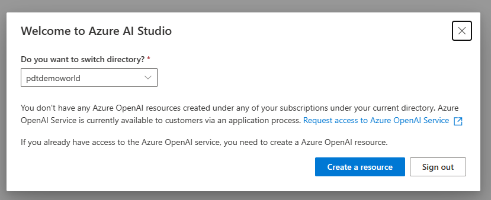
-
Select your Azure Subscription, and click Create Resource
-
This opens the Create Azure OpenAI Resource blade. Here, complete the necessary parameters:
- Azure Subscription
- Existing or New Azure Resource Group
- Azure Region of choice
- Unique Name for the Azure OpenAI Resource
- Pricing Tier: Select Standard S0 (The Free Basic won’t allow us to use the necessary Cognitive Search later on)
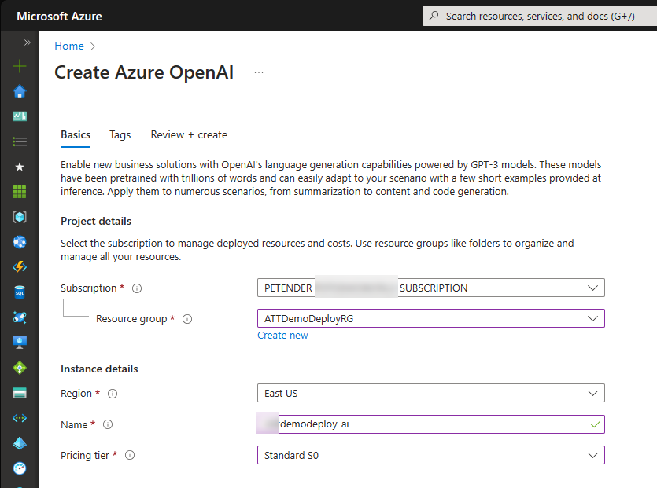
- Wait for the Azure OpenAI Resource to get deployed, and navigate to the resource once its ready.
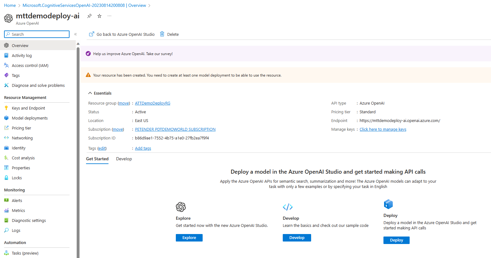
- Navigate back to Azure OpenAI Studio, which will allow you to select your Azure AI Resource created earlier.
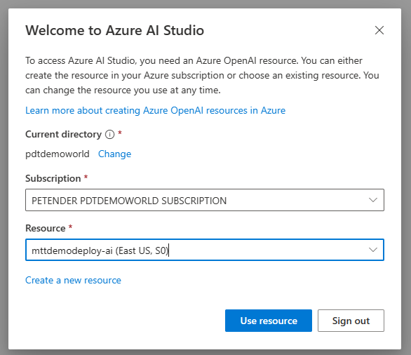
- From Azure OpenAI Studio, select Chat Playground from the Get Started options.
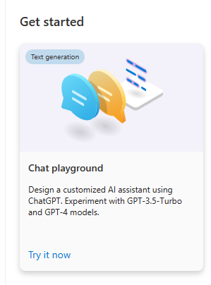
- Within the Chat Playground, click the Create new deployment button to set up a new Chat Plaground.
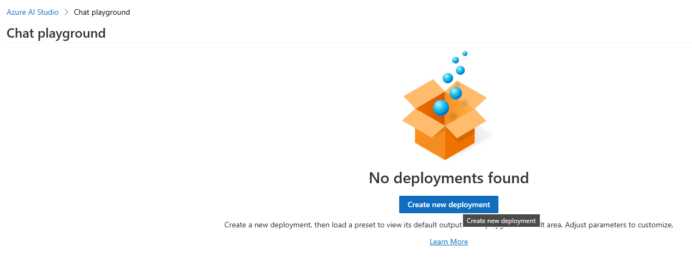
- In the next step, you will create the AI model needed for the Cognitive Search later on. Complete the necessary settings:
- Model: gpt-35-turbo
- Model Version: Auto-update-to-default
- Deployment Name: descriptive name of what the model is about
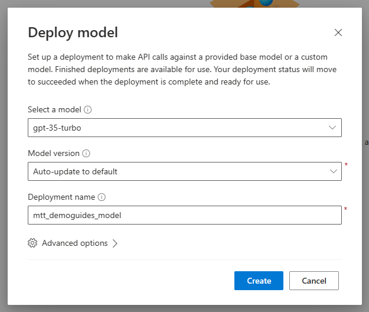
This completes the first part of the steps, where you deployed Azure AI Chat Playground using Azure AI Studio. In the next step, you add the data source which will be used for the chat content.
Adding your own data sources (Blob Storage) to the Azure AI Chat Playground
- With the model created, we can move on to the next step, adding data. From the Chat Playground, select Add your data (preview)
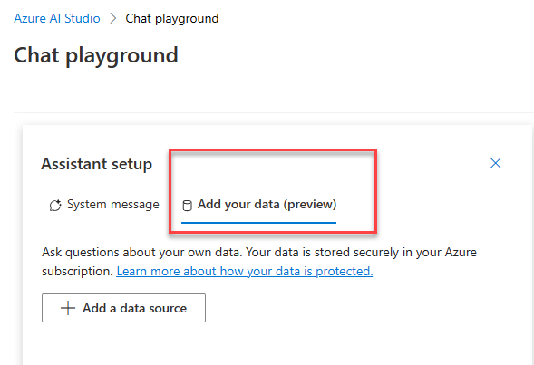
- From the Add Data blade, complete the necessary settings and parameters:
- Azure Subscription
- Azure Blob Storage Account
- Azure Blob Storage Account container
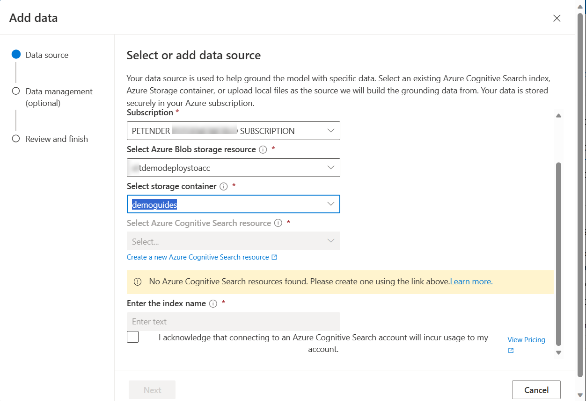
-
Note how it asks for an Azure Cognitive Search resource as well; this is to be able to read the actual content of the blobs, such as Word documents, PDF files, etc…
-
Click the Create a new Azure Cognitive Search Resource link to get this resource created.
-
From the Create a search service blade, enter the necessary parameters for the resource creation:
- Azure Subscription
- Azure Resource Group
- Location (make sure this matches the previous settings for the Azure OpenAI resource)
- Service Name: unique name for the search service
- Pricing Tier: Basic (since the free service won’t be recognized by Chat Playground)
- Scale / Replica: 1/1
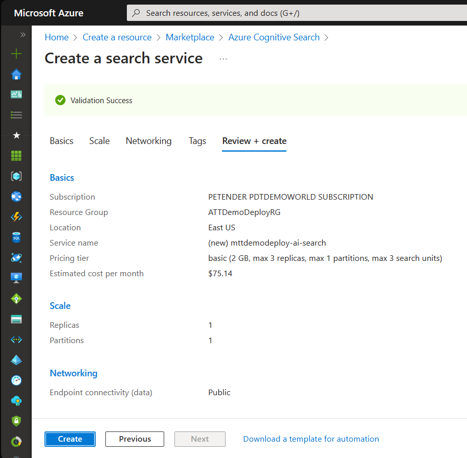
- Once the Search Service got created, navigate back to the Chat Playground, and repeat the steps to add your own data. This time, the Cognitive Search will be recognized as service in the Add Data Source step.
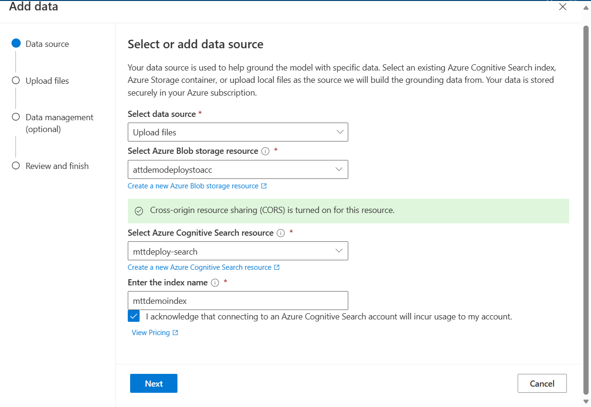
- Click Next, and upload a few sample files in the Upload Files step.
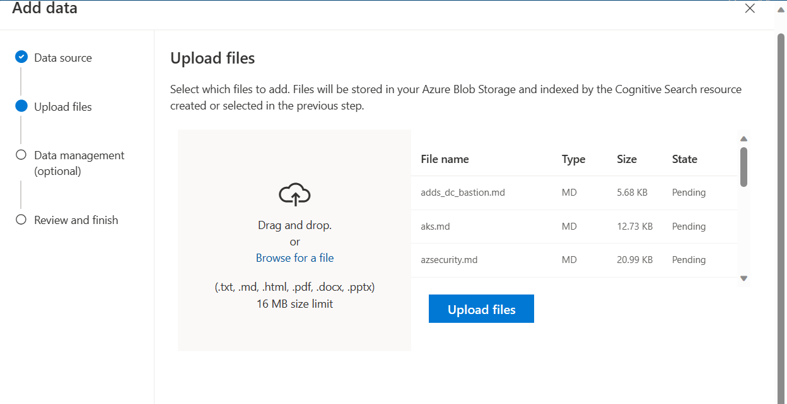
- Continue the add data source wizard steps, and completing with clicking Save and Close.
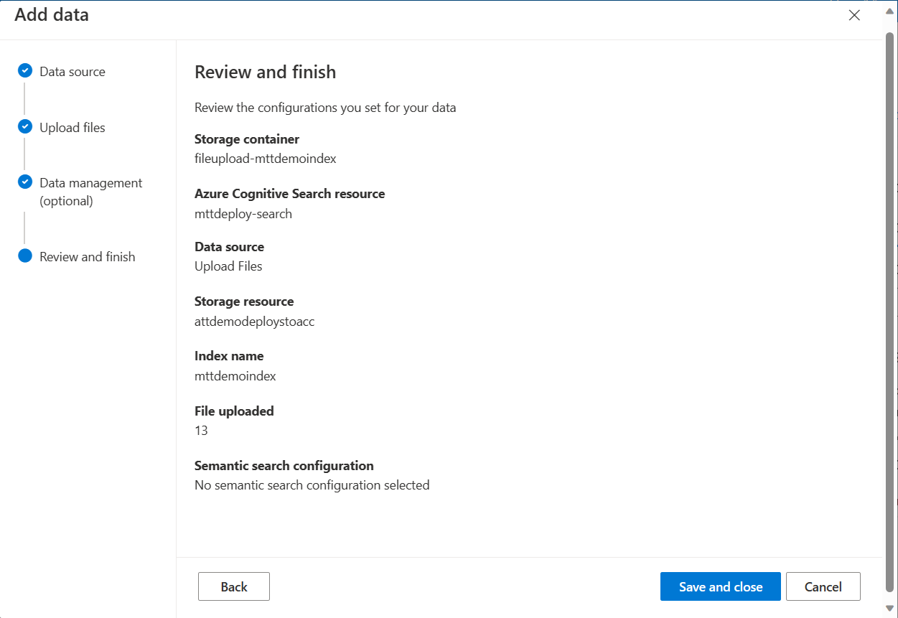
- From the Chat Playground window, notice how your data is getting added. This process should only take a few minutes.
This completes this part of the steps, where you specified the data source to be used by the Chat Playground. In the next and last step, you will use the Chat Session to validate the functionality of the chat bot, and testing the accuracy of the responses.
Using Chat Session to validate data content and response
- From the Chat Playground blade, navigate to Chat session. Enter a basic question in the your message field.
Note: in my scenario, I was using demoguides, so wanted to check back if the chat bot could find a demo scenario containing Cosmos DB as resource.
Based on the question, the chat bot responded with an accurate answer, providing a brief description of the actual demo steps from the guide, as well as a link to the actual source markdown-file in Blob Storage.
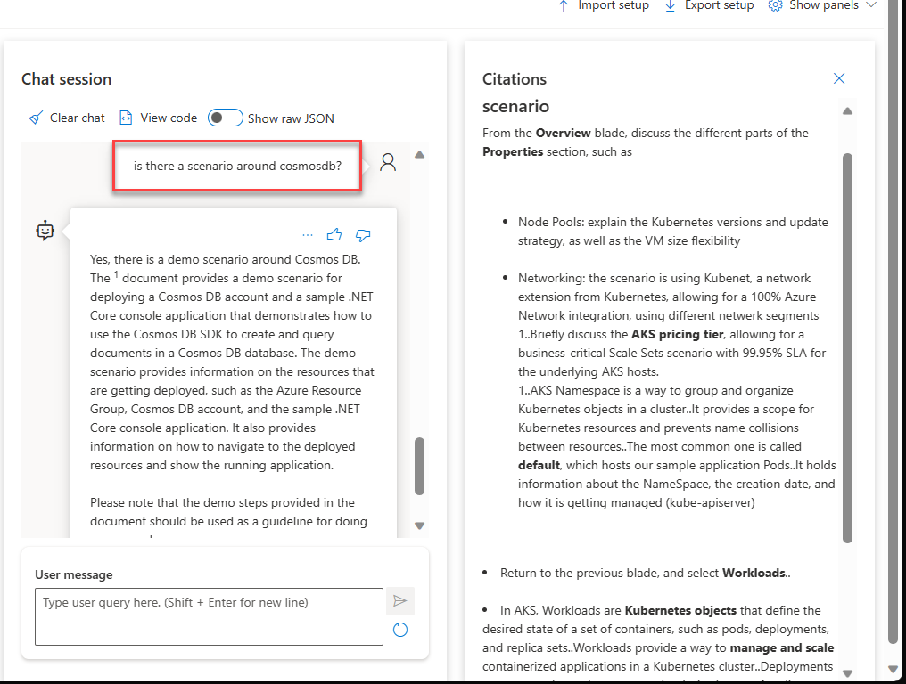
- As I only have 1 single guide with CosmosDB, let’s test how it handles the question, if there are more results possible. I asked a somewhat broader question, using retail application as keyword (Note: our demo scenarios involve a retail application as example, which exists in a Virtual Machine architecture, a Platform as a Service, Container Instance, Kubernetes Service and Azure Container Apps architecture). So based on that, the expectation is to get multiple results back.
Woohoo!! The Chat bot found the different sources and provided a nice summary overview.
This was more than convincing to me how powerful Azure AI is. While the answers might not have been 100% accurate - close to 95% I guess :), know we just deployed the model without any fine-tuning, nor wait a long time to actually build up an accurate index of the blob source content.
- Next, optional though, you can publish the Chat Bot to an Azure App Service. This would allow a developer to integrate the bot in a broader web app scenario using iframe or similar HTML/CSS code.
From the Chat Playground blade, navigate to Deploy to in the upper right corner. and select Azure App Service.
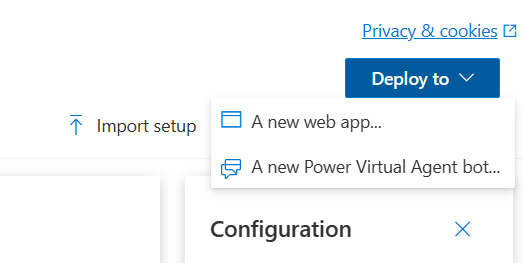
- Complete the necessary parameters for the Azure App Service to be created:
- App Service Name
- Azure Subscription
- Azure Resource Group
- Location
- Pricing Plan (S0 or S1 would be OK)
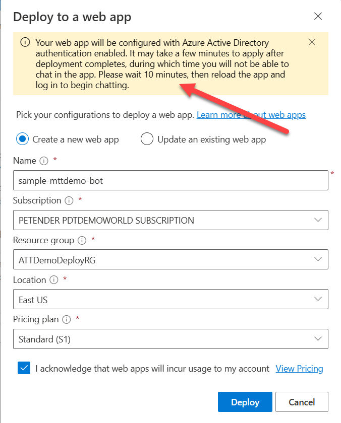
-
After waiting about 5 minutes (although the wizard set it could take up to 10min…), it asked me for my Azure AD credentials to authenticate. (**Note: out of the publishing wizard, a new App Registration and Service Principal gets created, granting only the admin user access. In a real-life scenario, you would need to update the Authentication settings on the App Registration to allow for a broader Identity scope)
-
After successful authentication, the Chat Bot is ready to be used:
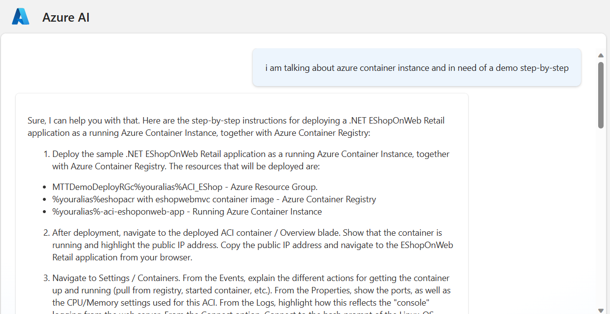
- As a final test, I wanted to see how the Chat Bot responded if it didn’t find the correct answer. (This was partly to rule out the ChatGPT experience I had before, where the AI engine invents its own answers, but still explaining it in such a way it feels as the correct answer)
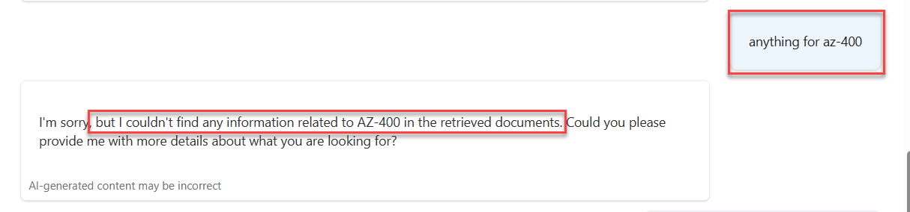
As you can see, Azure AI handles it a bit more ‘honest’, and admitting it couldn’t help providing an accurate answer.
Summary
Azure AI is an amazing cloud service, with unseen capabilities. With this article, I wanted to inform you as a reader on how easy it can be to set up Azure AI Cognitive Search, and using it with a Chat Bot functionality, based on your own data from Azure Blob Storage.
I’m confident Azure AI will become a big part of our day-to-day skillset. So expect more similar blog posts in the near future how I’m continuing my journey of learning about AI and get ready for the future.

Cheers!!
/Peter